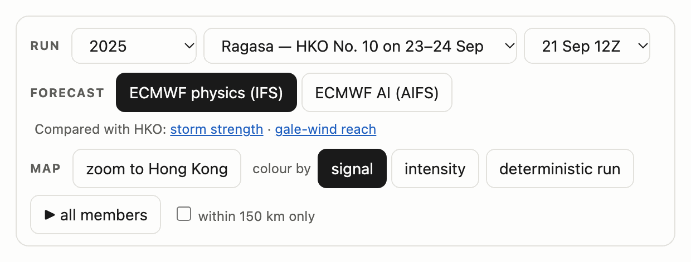
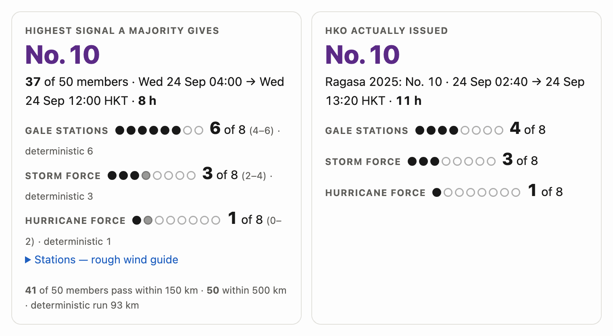
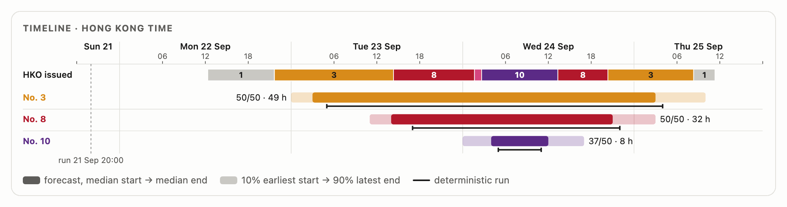
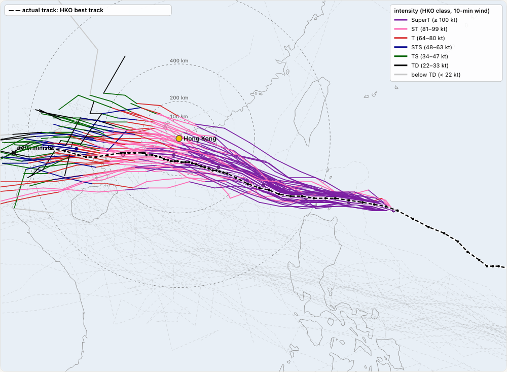
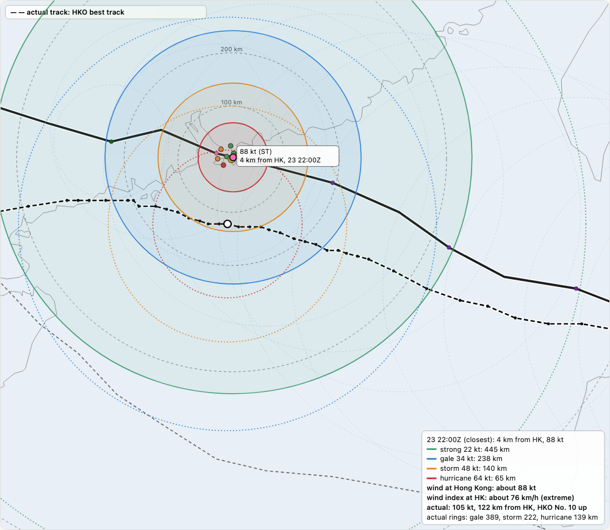
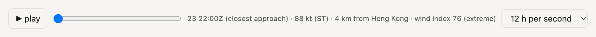
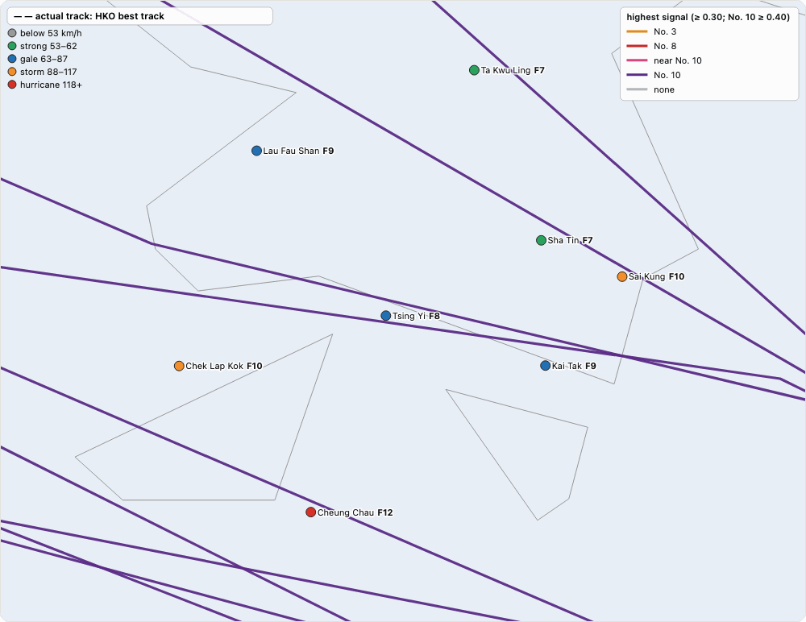
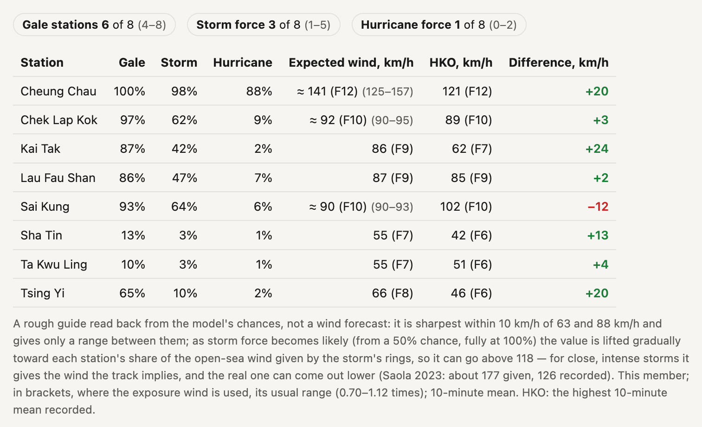
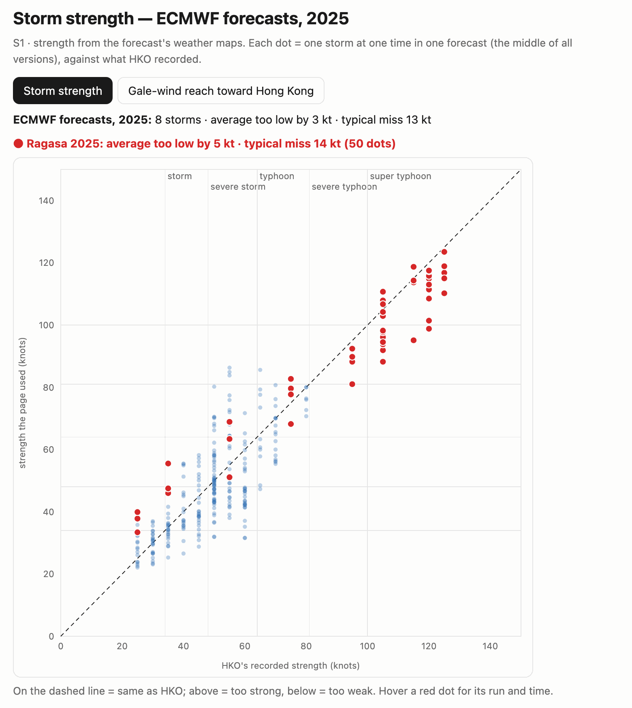

Pick a run.
Choose the year, then the storm, then the run: the time the forecast started, in UTC. Latest runs holds the newest forecasts. Every other year is a past storm, run again so you can set it beside what HKO did.
The Forecast buttons switch between ECMWF's physics model (IFS) and its AI model (AIFS). Older years use ECMWF's archived forecasts (2008–2023) or Pangu-Weather (2018–2022).
This tour uses Typhoon Ragasa, from ECMWF's physics forecast that started at 12Z on 21 Sep 2025, about 2½ days before it passed.

The answer comes first.
ECMWF runs each forecast about 50 times with small changes: the members. The big number is the highest signal most of them reach, with when it starts and ends, in Hong Kong time.
Below it is how many of HKO's 8 reference stations get gale, storm-force or hurricane-force winds. For a past storm, what HKO actually issued sits alongside.
Here, 37 of 50 members give No. 10, for about 8 h. HKO issued No. 10 for 11 h.

When each signal is up.
One bar per signal, on Hong Kong time. The solid part runs from the members' middle start to their middle end, and the faint part shows the 10–90% range.
The thin line is the deterministic run, ECMWF's single main forecast. On past storms, HKO's actual signals run along the top.

Every member is a line.
Each line is one member's storm track, coloured by the highest signal it gives Hong Kong: No. 3, No. 8, No. 10. Pink means near No. 10, which is not expected but becomes plausible if the track shifts by up to 50 km or the storm is a little stronger.
The dashed black line is where the storm really went. The circles mark 100, 200 and 400 km from Hong Kong.
…or by strength.
colour by: intensity paints each stretch of track by HKO's storm class, from tropical depression (black) through tropical storm, severe tropical storm, typhoon and severe typhoon, up to super typhoon (purple).

Watch them all move.
▶ all members moves every member's storm forward together, 12 hours a second. The large black dot is the deterministic run.
You can see the spread grow, and whether it closes on Hong Kong.
Follow one member.
Click a line to see that member alone, with four wind rings on the side facing Hong Kong: strong, gale, storm-force and hurricane-force winds. The player below the map steps through the hours.
← back to all members, under the player, brings everyone back.


Zoom in on the eight stations.
zoom to Hong Kong shows HKO's 8 reference stations. Each dot is coloured by its expected wind, and the Beaufort force sits beside its name.
For this run, F12 at Cheung Chau.

Read the winds, station by station.
The Station guide tab under the map gives each station's chance of gale (63 km/h), storm force (88) and hurricane force (118), and a rough expected wind.
For past storms it adds what HKO recorded, then the difference: red when the forecast was too low, green when it was too high.

Is it any good?
Every run links to Compared with HKO. Each dot there is one storm at one time, set against what HKO recorded, with the storm you are viewing in red.
For Ragasa, across ECMWF's 2025 physics forecasts, the storm strength came out 5 kt too low on average.
How good is it? has the full record, signal by signal and station by station.
